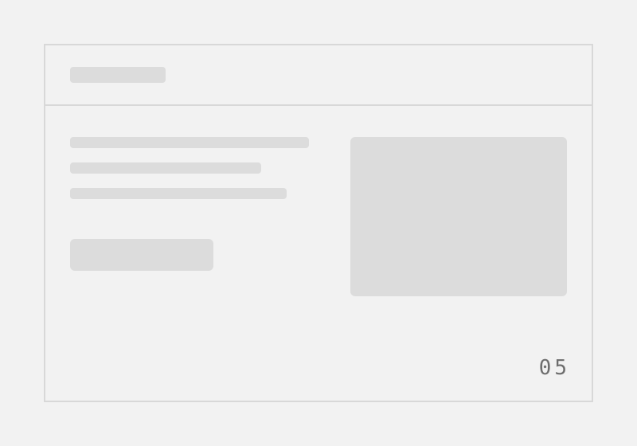

Case study — 01
Initial orders plummeted 80%, but retained customers grew by 80%.
A premium supplement brand blamed their design for bad sales, but a deceptive free trial was actually driving a 90% product return rate.
The client
They sell premium, certified supplements to an older demographic.
The client offered high-priced supplements backed by real certifications. They came to us with stagnant sales, convinced a visual redesign would fix things. They used a free trial model to acquire users, aiming to boost revenue without changing the offer.
The problem
“Our site looks outdated. We need a modern redesign to increase our product sales.”
They didn't have a design problem; they had a deceptive checkout. Customers clicked ‘try for free’ but were secretly enrolled in an opt-out subscription. They'd get billed later and return it. We built a beautiful new site, but it didn't fix the core lie driving a 90% return rate.
- Signal A massive 90% return rate buried in Shopify data, costing them double in shipping.
- Constraint We were initially hired just to reskin the landing pages and product catalog.
- Unknown Would an honest checkout kill their acquisition numbers completely?
How it got solved
Hover a step
-
01
Redesigned the catalogue
I built the requested educational pages first. It improved the promise but didn't stop the returns.
Unified catalog highlighting product certifications -
02
Uncovered the real P&L issue
I dug into their Shopify data and session recordings. I found a 90% return rate tied to the trial.
Reviewing Shopify return rates and hidden checkout terms -
03
Rebuilt for opt-in transparency
I redesigned the checkout to require active subscription opt-in and added a one-time purchase option.

New checkout flow with clear opt-in and purchase choices -
04
Argued the case with evidence
Orders plummeted 80%, so the client panicked. I showed the CEO the data proving we saved money.
Presenting return rates and competitor models to the CEO -
05
Rolled back the visual design
They reverted the catalogue look but kept the honest checkout. Total retained customers grew by 80%.

Final hybrid launch combining original site and new checkout
The impact
While top-line orders dropped, actual kept products increased by 80%.
- −80%
- Initial order volume
- 10%
- Final return rate
- +80%
- Retained customers
We eliminated the massive hidden costs of shipping free boxes only to handle returns. I learned a crucial lesson: UX issues are often P&L issues. If I had framed this around profit margins in month one instead of month three, the conversation would have been much easier.
Next case study